Роден на 9 юли (27 юни стар стил) 1850 г. в Сопот. Произхожда от семейство на средно заможен търговец, в което на почит са строгият ред и патриархалността, уважение към религиозните и битовите традиции, отзивчивостта към възрожденските просветителски и патриотични настроения. Брат е на военните дейци Георги Вазов и Владимир Вазов, както и на общественика и политик Борис Вазов.
Според Борис Вазов:
Вазови или Вазовци е български род, основан от Кирко (Киро) Иванов Арнаудов от нестрамското село
Яновени, който се преселва в Сопот в края на 18 век по време на управлението на Али паша Янински.
Киро има трима синове, единият от които – Иван, често е изпращан в делегации като
представител на българите пред турската власт. Бил изключително сладкодумен и турците го
наричат Иван Айвазът (т.е. сладкодумният), което по-късно е побългарено до „вазът“, та децата му
са наричани „вазовите“ деца. Единият от синовете на Иван е Минчо Вазът.
Най-известните представители на рода са сред десетте деца на Минчо и Съба Вазови:
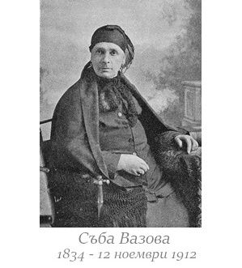
 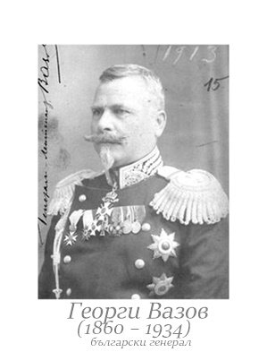
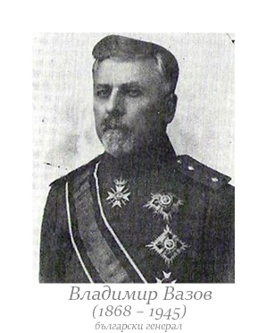
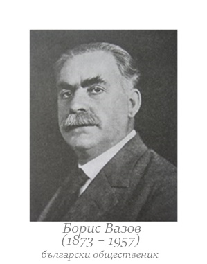
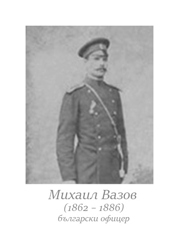
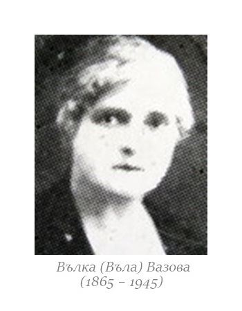
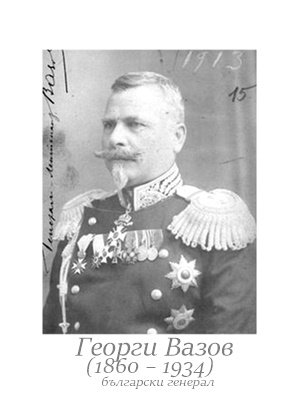
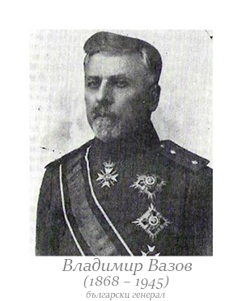
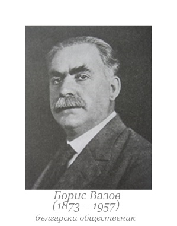
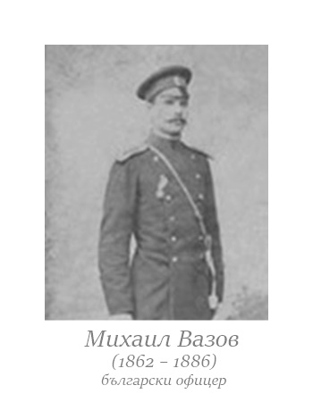
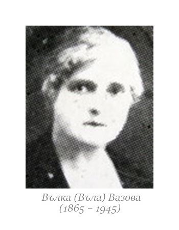
Иван Вазов завършва местното взаимно и класно училище, запознава
се с оригинална и преводна българоезична литература. С помощта на учителя
Партений Белчев, руски възпитаник, отрано се приобщава и към рускоезичната
поезия. През 1866 г. учи гръцки и турски език в Калоферското училище при Ботьо
Петков (бащата на Христо Ботев), като става негов помощник поддаскал. Там намира
богата библиотека от френскоезични и рускоезични книги, които изиграват голяма роля за литературното му развитие.
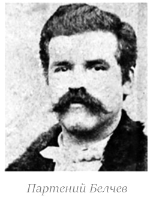
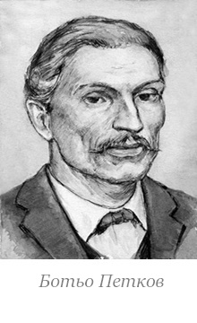
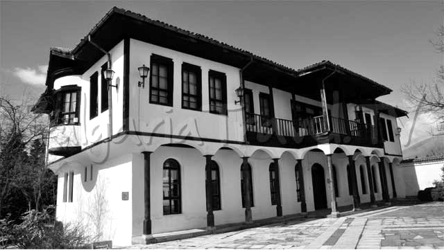
През 1866 г. се записва в 4-ти клас на Пловдивската гимназия, ръководена от Йоаким Груев, където трябва да овладее гръцки и турски език. Освен това Вазов усърдно изучава френски език и се увлича от поезията на Пиер Беранже, Виктор Юго и Алфонс дьо Ламартин. През 1868 г. баща му го извиква в Сопот, за да поеме търговията, но Вазов не проявява склонност към тази професия, а изпълва бащините си тефтери със стихове (част от тях излизат през 1880 в стихосбирката „Майска китка“). През 1870 г. в „Периодическо списание“ на Браилското книжовно дружество излиза и първото му публикувано стихотворение „Борът“.